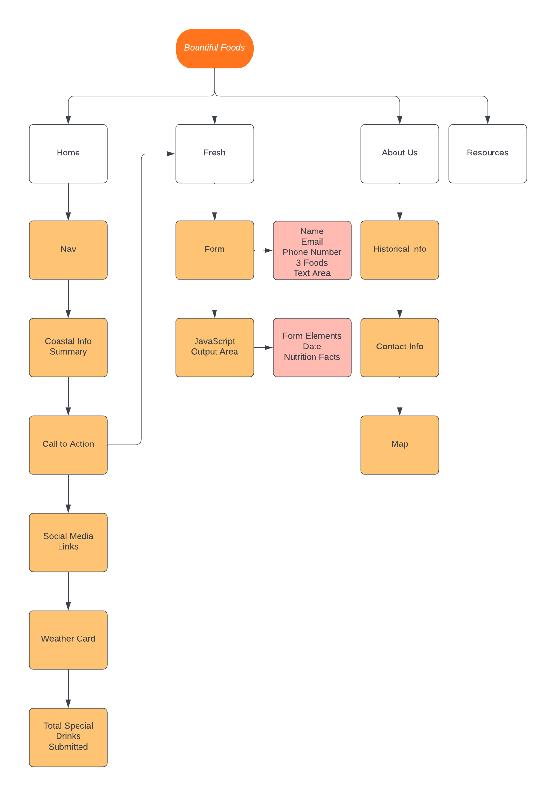
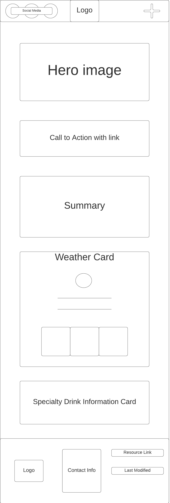
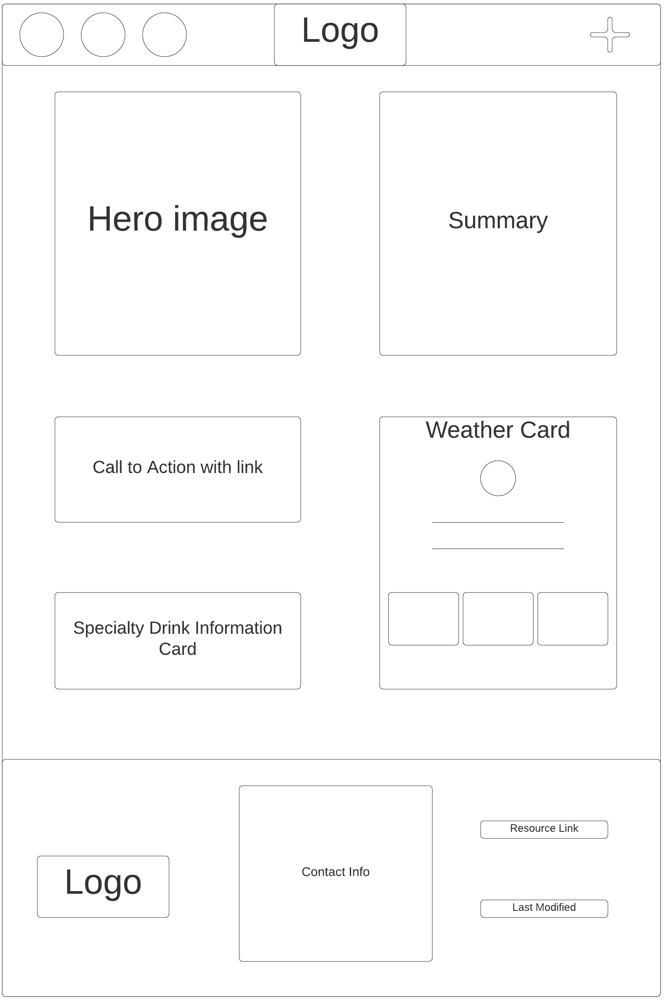
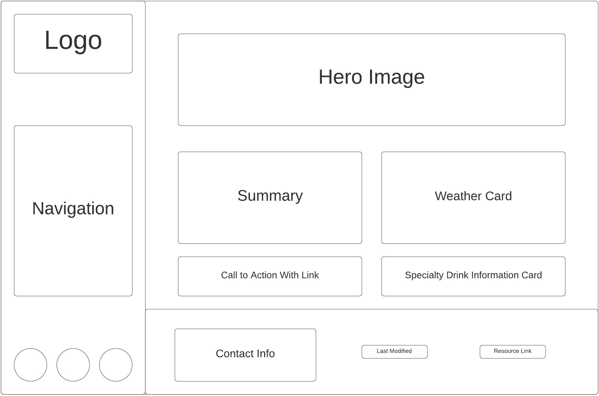

Site Name: Bountiful Foods
Site Purpose:
A website for a company called Bountiful Foods that showcases the fruit and produce that they have as well as the specialty fruit that they make fresh using these products.
Target Audience
This site is targeted to those looking for healthier drink options. This can be those of all ages that are either new customers or those that have obtained this product before. This is for the area of Carlsbad, California for the physical store location but also for the coastal areas of Los Angeles to San Diego for the food trucks that they own.
Site Map
Color Scheme
- #EF6F6C
- #FFBF00
- #3DA5D9
- #0C1B33
- #32936F
Typography
- Header
- Paragraph
Wireframe Sketches


